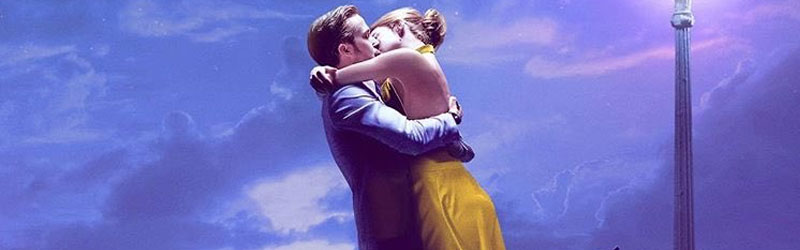

La La Land sigue la historia de Mia Dolan, una joven aspirante a actriz que trabaja en una cafetería dentro de los estudios de Hollywood, y Sebastian Wilder, un pianista de jazz apasionado que sueña con abrir su propio club para preservar la música que ama. Ambos viven en Los Ángeles, una ciudad donde miles de personas persiguen sus sueños, aunque no siempre logran alcanzarlos.
Sus caminos se cruzan porr casualidad y, poco a poco, surge entre ellos una relación marcada por la complicidad, el apoyo mutuo y la ilusión de construir un futuro mejor. Mia lucha por hacerse un hueco en el mundo de la interpretación, enfrentándose a audiciones fallidas y a la frustración constante. Sebastian, por su parte, intenta mantenerse fiel a su pasión por el jazz mientras acepta trabajos que no le llenan para poder sobrevivir.
A medida que su relación avanza, también lo hacen sus oportunidades profesionales, pero el éxito empieza a poner a prueba su amor. Ambos se ven obligados a tomar decisiones difíciles que los llevan a cuestionarse qué es más importante: sus sueños individuales o la vida que imaginaban juntos. La película explora cómo el amor puede impulsarnos, pero también cómo perseguir nuestras metas puede alejarnos de quienes queremos.
Con una estética vibrante, números musicales llenos de energía y una historia profundamente humana, La La Land reflexiona sobre el precio de los sueños, la nostalgia por lo que pudo haber sido y la belleza de los caminos que elegimos… incluso cuando no llevan al final que imaginábamos.